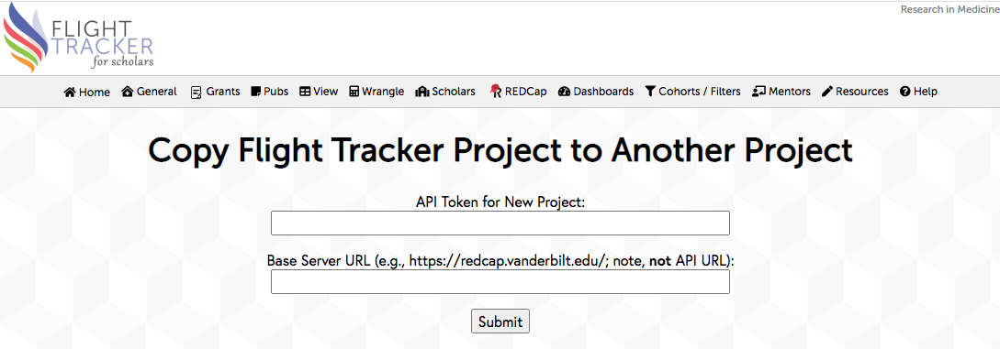

Copying a Flight Tracker Project
REDCap has a difficult time copying a Flight Tracker project to another server, so the software has its own way of achieving this copy. Many people set up Flight Tracker on a development server, only to move it to production later. To achieve this move, use the following steps:
- Get a “supertoken” on the Flight Tracker server from your local REDCap Administrator. You can coach her/him that it’s available in REDCap’s Control Center under the API Tokens page. This supertoken is 64-characters long, unlike the simple API token, which is 32-characters long. You should keep this supertoken secret.
- Open up Flight Tracker’s General → Configure Application page.
- Copy/paste your supertoken into the supertoken field and save the settings by clicking the button.
- Finally, go to the General menu and open the page Copy Project to Another Server. Then you should be able to initiate the copy from here. It may take some time (minutes to tens of minutes, not hours), so please be patient.
